東京大学 2016年 理科 第3問
問題
aを1<a<3をみたす実数とし、座標空間内の4点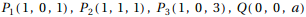を考える。直線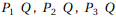とx y平面の交点を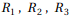として、三角形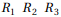の面積をS(a)とする。S(a)を最小にするaと、そのときのS(a)の値を求めよ。
解答
直線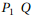の方程式は(z-1)=(1-a)(x-1),y=0
直線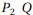の方程式は(z-1)=(1-a)(x-1),y=x
直線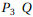の方程式は(z-3)=(3-a)(x-1),y=0
よって点の座標は
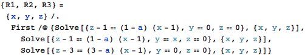
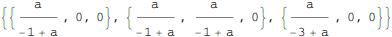
三角形の面積S(a)は
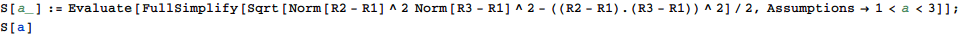
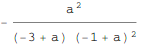
1<a<3の範囲でS(a)の最小値と、そのときのaは
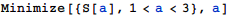
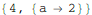
補足・感想
人間の解法と同じで、計算部分だけMathematicaにやらせたパターン。